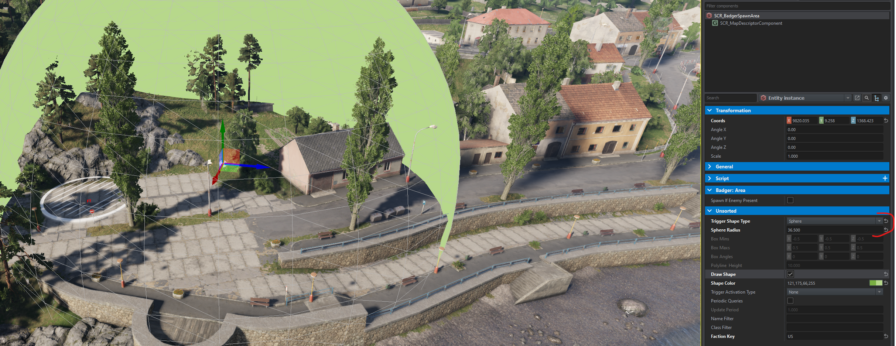

Base Gamemode
For my purposes I just want to create a gamemode class that can store SpawnAreas as well as Points of Interest along with appropriate APIs to register/unregister amongst a few other things.
[EntityEditorProps(category: "GameScripted/Gamemode", description: "Badger's basic game-mode.", color: "0 0 255 255")]
class SCR_Badger_BaseGameModeClass : SCR_BaseGameModeComponentClass
{
};
class SCR_Badger_BaseGameMode : SCR_BaseGameModeComponent
{
// Actual code will go here
};
This is all we need to make this class appear in the Enfusion Editor as a component we can add to SCR_BaseGameMode.
-
Place a
SCR_BaseGameModeinto the world.
-
Click on the
SCR_BaseGameModeentity andAddComponent -
Select
SCR_Badger_BaseGameMode, or whatever you called yours... if you're following along...
Now you should have it appear in the entity hierarchy

Singleton
This will behave as a centralized place for any other subsystem. For my uses I'd like to store Faction SpawnAreas along with Points of Interest. Both of these are entities which will automatically register themselves which will require an API. So lets get cracking....
External entities will need a way to access our gamemode API. There should only ever be one instance. Thus, a singleton approach is perfect.
// Singleton, assigned on first 'get'
static SCR_Badger_BaseGameMode s_pInstance;
// Retrieves existing instance of gamemode, if it exists...
SCR_Badger_BaseGameMode GetInstance()
{
BaseGameMode gameMode = GetGame().GetGameMode();
if(!gameMode) return null;
if(!s_pInstance)
s_pInstance = SCR_Badger_BaseGameMode.Cast(gameMode.FindComponent(SCR_Badger_BaseGameMode));
return s_pInstance;
}
Spawn Areas
We need the ability to both register and unregister a spawn area.
private ref map<Faction, ref array<SCR_Badger_SpawnArea>> m_FactionSpawnAreas = new map<Faction, ref array<SCR_Badger_SpawnArea>>();
void RegisterSpawnArea(SCR_Badger_SpawnArea spawnArea)
{
if(!GetGame().GetFactionManager())
{
Print("Could not locate faction manager. Unable to register spawn area", LogLevel.ERROR);
return;
}
Faction areaFaction = GetGame().GetFactionManager().GetFactionByKey(spawnArea.GetAffiliatedFactionKey());
if(!areaFaction) return;
if(!m_FactionSpawnAreas.Contains(areaFaction))
m_FactionSpawnAreas.Insert(areaFaction, new array<SCR_Badger_SpawnArea>());
m_FactionSpawnAreas.Get(areaFaction).Insert(spawnArea);
Print(string.Format("%1 has %2 spawn areas now...", areaFaction.GetFactionName(), m_FactionSpawnAreas.Get(areaFaction).Count()), LogLevel.DEBUG);
}
void UnregisterSpawnArea(SCR_Badger_SpawnArea spawnArea)
{
if(!GetGame().GetFactionManager())
{
Print("Could not locate faction manager. Unable to unregister spawn area", LogLevel.ERROR);
return;
}
Faction areaFaction = GetGame().GetFactionManager().GetFactionByKey(spawnArea.GetAffiliatedFactionKey());
if(!areaFaction) return;
if(!m_FactionSpawnAreas.Contains(areaFaction)) return;
int indexOf = m_FactionSpawnAreas.Get(areaFaction).Find(spawnArea);
if(indexOf != -1)
m_FactionSpawnAreas.Get(areaFaction).Remove(indexOf);
}
Now that we have the ability to add/remove spawn areas we also need a way to access them!
// Gets the number of spawn areas that are being tracked for a given faction
int GetSpawnAreaCountFor(FactionKey factionKey)
{
if(!factionKey) return 0;
Faction faction = GetGame().GetFactionManager().GetFactionByKey(factionKey);
if(!faction) return 0;
if(!m_FactionSpawnAreas.Contains(faction)) return 0;
return m_FactionSpawnAreas.Get(faction).Count();
}
// Populate a given array with the spawn areas of a given faction (if applicable), and return the # of spawn areas
int GetSpawnAreasFor(notnull array<SCR_Badger_SpawnArea> outAreas, FactionKey factionKey)
{
if(!factionKey)
{
Print("[SCR_Badger_BaseGameMode] <GetSpawnAreasFor>: FactionKey cannot be null. Returning 0", LogLevel.ERROR);
return 0;
}
Faction faction = GetGame().GetFactionManager().GetFactionByKey(factionKey);
if(!faction)
{
Print(string.Format("[SCR_Badger_BaseGameMode] <GetSpawnAreasFor>: Could not locate faction with key %1", factionKey), LogLevel.ERROR);
return 0;
}
int count = 0;
foreach(SCR_Badger_SpawnArea spawnArea : m_FactionSpawnAreas.Get(faction))
{
outAreas.Insert(spawnArea);
count++;
}
return count;
}
// Return a random spawn area from a given faction
SCR_Badger_SpawnArea GetRandomSpawnAreaFor(FactionKey factionKey)
{
if(!factionKey)
{
Print("[SCR_Badger_BaseGameMode] <GetRandomSpawnAreaFor>: Faction key is null. Returning nothing");
return null;
}
Faction faction = GetGame().GetFactionManager().GetFactionByKey(factionKey);
if(!faction)
{
Print(string.Format("[SCR_Badger_BaseGameMode] <GetRandomSpawnAreaFor>: Could not locate faction with key %1", factionKey), LogLevel.ERROR);
return null;
}
if(!m_FactionSpawnAreas.Contains(faction)) return null; // if we're not tracking that faction...
return m_FactionSpawnAreas.Get(faction).GetRandomElement();
}
Point of interest
Just like our spawn areas we need the same type of API to register, unregister, retrieve and such....
private ref array<SCR_Badger_POI> m_PointsOfInterest = {};
// Retrieve # of POIs being tracked
int PointsOfInterestCount() { return m_PointsOfInterest.Count(); }
// Loads points of interest into `outArray` and returns # of POIs
int GetPointsOfInterest(notnull array<SCR_Badger_POI> outArray)
{
int count = 0;
foreach(SCR_Badger_POI area : m_PointsOfInterest)
{
outArray.Insert(area);
count++;
}
return count;
}
// Return a random POI.
SCR_Badger_POI GetRandomPointOfInterest()
{
if(m_PointsOfInterest.IsEmpty()) return null;
return m_PointsOfInterest.GetRandomElement();
}
// Retrieve the areas held by a given faction, in `areas`. Return # of POIs held.
int GetPointsOfInterestHeldBy(notnull array<SCR_Badger_POI> areas, FactionKey factionKey)
{
int count = 0;
foreach(SCR_Badger_POI area : m_PointsOfInterest)
{
if(area.GetOwningFaction().GetFactionKey() != factionKey)
continue;
areas.Insert(area);
count++;
}
return count;
}
// Registers a POI to the game mode
void RegsterPOI(SCR_Badger_POI area)
{
if(!area) return;
m_PointsOfInterest.Insert(area);
}
// Unregisters / removes POI from game mode
void UnregisterPOI(SCR_Badger_POI area)
{
if(!area) return;
int indexOf = m_PointsOfInterest.Find(area);
if(indexOf != -1)
m_PointsOfInterest.Remove(indexOf);
}
In closing
That's pretty much all the functionality we need in our basic gamemode system.
Faction Config
To eliminate the attribute/property soup we'll utilize config files! This also makes swapping out a set of values a bit cleaner / easier in the long run as well.
We may even simplify it further by separating site-compositions into another config!
[BaseContainerProps(configRoot: true)] // This is required in order to inform the engine this is a config file
class Badger_AttackDefend_FactionConfig
{
// All the values we want in our config go here
[Attribute("", UIWidgets.EditBox, "Faction Key", category: "Basic Info")]
private FactionKey m_pFactionKey;
[Attribute("1", UIWidgets.Slider, desc: "Number of groups to maintain overtime", params: "1, 100, 1", category: "Basic Info")]
private int m_iNumberOfGroups;
[Attribute("", UIWidgets.ResourcePickerThumbnail, desc: "Group Prefabs to spawn", params: "et", category: "Basic Info")]
private ref array<ResourceName> m_aGroupPrefabs;
[Attribute("", UIWidgets.ResourcePickerThumbnail, desc: "Small road site prefabs of controlled areas", category: "Sites: Road Prefabs")]
private ref array<ResourceName> m_aSmallRoadSitePrefabs;
[Attribute("", UIWidgets.ResourcePickerThumbnail, desc: "Medium road site prefabs of controlled areas", category: "Sites: Road Prefabs")]
private ref array<ResourceName> m_aMediumRoadSitePrefabs;
[Attribute("", UIWidgets.ResourcePickerThumbnail, desc: "Large road site prefabs of controlled areas", category: "Sites: Road Prefabs")]
private ref array<ResourceName> m_aLargeRoadSitePrefabs;
[Attribute("", UIWidgets.ResourcePickerThumbnail, desc: "Small site prefabs of controlled areas", category: "Sites: Site Prefabs")]
private ref array<ResourceName> m_aSmallSitePrefabs;
[Attribute("", UIWidgets.ResourcePickerThumbnail, desc: "Medium site prefabs of controlled areas", category: "Sites: Site Prefabs")]
private ref array<ResourceName> m_aMediumSitePrefabs;
[Attribute("", UIWidgets.ResourcePickerThumbnail, desc: "Large site prefabs of controlled areas", category: "Sites: Site Prefabs")]
private ref array<ResourceName> m_aLargeSitePrefabs;
[Attribute("1", UIWidgets.CheckBox, desc: "Cares about Points of Interest", category: "POI")]
private bool m_CaresAboutPointsOfInterest;
FactionKey GetFactionKey() { return m_pFactionKey; }
int GetNumberOfGroups() { return m_iNumberOfGroups; }
bool CaresAboutPointsOfInterest() { return m_CaresAboutPointsOfInterest; }
/*
Since we're only using this to obtain random elements from these arrays we'll
create that functionality and expose it versus exposing our arrays directly
*/
ResourceName GetRandomGroupPrefab()
{
if(!m_aGroupPrefabs || m_aGroupPrefabs.IsEmpty()) return ResourceName.Empty;
return m_aGroupPrefabs.GetRandomElement();
}
ResourceName GetRandomSmallCheckpointPrefab()
{
if(!m_aSmallRoadSitePrefabs || m_aSmallRoadSitePrefabs.IsEmpty()) return ResourceName.Empty;
return m_aSmallRoadSitePrefabs.GetRandomElement();
}
ResourceName GetRandomMediumCheckpointPrefab()
{
if(!m_aMediumRoadSitePrefabs || m_aMediumRoadSitePrefabs.IsEmpty()) return ResourceName.Empty;
return m_aMediumRoadSitePrefabs.GetRandomElement();
}
ResourceName GetRandomLargeCheckpointPrefab()
{
if(!m_aLargeRoadSitePrefabs || m_aLargeRoadSitePrefabs.IsEmpty()) return ResourceName.Empty;
return m_aLargeRoadSitePrefabs.GetRandomElement();
}
ResourceName GetRandomSmallSitePrefab()
{
if(!m_aSmallSitePrefabs || m_aSmallSitePrefabs.IsEmpty()) return ResourceName.Empty;
return m_aSmallSitePrefabs.GetRandomElement();
}
ResourceName GetRandomMediumSitePrefab()
{
if(!m_aMediumSitePrefabs || m_aMediumSitePrefabs.IsEmpty()) return ResourceName.Empty;
return m_aMediumSitePrefabs.GetRandomElement();
}
ResourceName GetRandomLargeSitePrefab()
{
if(!m_aLargeSitePrefabs || m_aLargeSitePrefabs.IsEmpty()) return ResourceName.Empty;
return m_aLargeSitePrefabs.GetRandomElement();
}
}
Config Creation
In the resource browser we can now
Right Click --> Config File --> "give it a name you want" --> Badger_AttackDefend_FactionConfig

Config Usage
Using our config is actually simple... First we'll want to expose our config to the editor, and limit the config class type to our custom one! We don't want just ANY config...
To limit the class-type we need to set the conf class equal to the target type. In our case it's Badger_AttackDefend_FactionConfig.
[Attribute("", UIWidgets.Object, params: "conf class=Badger_AttackDefend_FactionConfig", category: "Configs")]
private ref Badger_AttackDefend_FactionConfig m_defendingFactionConfig;
Unfortunately I wasn't able to get this working as an array. Would have been nice in certain use-cases to add multiple configs for something. Oh well... Could also be possible and I just didn't figure it out yet.

By default, the property will be empty and it'll let you create a config item. Or, you can simply drag and drop an existing config from the Resource Browser onto the property.

Spawn Area
Our spawn area needs to register itself to our basic game mode SCR_Badger_BaseGameMode. This allows other subsystems to utilize our spawn area!
Not a lot of stuff is needed here....
[EntityEditorProps(category: "GameScripted/GameMode/Badger", description: "Defines a spawn area for a given side")]
class SCR_Badger_SpawnAreaClass : SCR_SpawnAreaClass
{
}
class SCR_Badger_SpawnArea : SCR_SpawnArea
{
FactionKey GetFaction() { return GetAffiliatedFactionKey(); }
// View figure for more details
int GetSpawnRadius() { return GetSphereRadius(); }
protected override void OnInit(IEntity owner)
{
super.OnInit(owner);
if(!GetGame().InPlayMode())
return;
// Register
SCR_Badger_BaseGameMode badger = SCR_Badger_BaseGameMode.GetInstance();
if(!badger)
{
Print("[SCR_Badger_SpawnArea] <OnInit> Cannot find SCR_Badger_BaseGameMode! Functionality will be limited", LogLevel.ERROR);
return;
}
badger.RegisterSpawnArea(this);
}
}

Point of Interest
Similar to SCR_Badger_SpawnArea we have a POI. Primary difference is this isn't meant for spawning, but instead is a CaptureArea.
[EntityEditorProps(category: "GameScripted/GameMode/Badger", description: "Defines a point of interest for Badger-Systems")]
class SCR_Badger_POIClass : SCR_CaptureAreaClass
{
}
class SCR_Badger_POI : SCR_CaptureArea
{
protected override void OnInit(IEntity owner)
{
super.OnInit(owner);
if(!GetGame().InPlayMode())
return;
SCR_Badger_BaseGameMode badger = SCR_Badger_BaseGameMode.GetInstance();
if(!badger)
{
Print("[SCR_Badger_POI] <OnInit>: Was unable to find SCR_Badger_BaseGameMode, functionality will be limited", LogLevel.ERROR);
return;
}
badger.RegisterPOI(this);
}
}
Attack Defend System
Creating the classic attack/defend scenario with a little bit of a twist.
Since this is essentially a game-mode type we'll create a script which inherits from the SCR_BaseGameModeComponent. This eventually gets attached to a gamemode entity.
To start of we got our AttackDefend class/component. Now I'm not entirely sure why we need two of these things...
The class is obviously what gets exposed in the Enfusion editor but not sure why the other thing is needed??? It works... magic... guess we shouldn't question it...
[EntityEditorProps(category: "GameScripted/Systems", description: "Entity that takes care of managing AI spawning.", color: "0 0 255 255")]
class SCR_Badger_AttackDefendClass: SCR_BaseGameModeComponentClass
{
};
class SCR_Badger_AttackDefend : SCR_BaseGameModeComponent
{
// This is where actual code goes
};
Singleton practice
Just like SCR_Badger_BaseGameMode we may have other systems that want to interact with our Attack/Defend gamemode. Thus, we shall utilize the singleton approach for accessing it
static SCR_Badger_AttackDefend s_pInstance;
static SCR_Badger_AttackDefend GetAttackDefendHandler()
{
BaseGameMode gameMode = GetGame().GetGameMode();
if(!gameMode)
return null;
if(!s_pInstance)
s_pInstance = SCR_Badger_AttackDefend.Cast(gameMode.FindComponent(SCR_Badger_AttackDefend));
return s_pInstance;
}
Propeties/Attributes
Configs
The two major attributes here will be the Badger_AttackDefend_FactionConfig values. We'll have one for both the defending and attacking factions.
/*
Configs make it easier to swap entire sections of data. Versus using a prefab for every variant of Attack/Defend
*/
[Attribute("{ABE12035F94ABE16}Scripts/Game/Config/Badger_AttackDefend_US.conf", UIWidgets.Object, params: "conf class=Badger_AttackDefend_FactionConfig", category: "Configs")]
private ref Badger_AttackDefend_FactionConfig m_defendingFactionConfig;
[Attribute("{C2F3ECCF192F855D}Scripts/Game/Config/Badger_AttackDefend_USSR.conf", UIWidgets.Object, params: "conf class=Badger_AttackDefend_FactionConfig", category: "Configs")]
private ref Badger_AttackDefend_FactionConfig m_attackingFactionConfig;
It is important to note that the GUID/Resource path will certainly vary for you. Once I created the Badger_AttackDefend_FactionConfig class I created 2 files to represent the US and USSR. I assigned the appropriate values in each and would like to use those files as default. To obtain the resource path you see above simply:
- Right click on config file in the resource browser
- Copy Resource Name(s).
- Paste the value... done
Another important thing to note is the category value in these attributes. Attributes are grouped by category in the editor which make things a bit cleaner / easier to read.
Spawn Settings
As a scenario creator it'd be nice to tweak the number of groups that can spawn at a time. We'll expose a min/max value for the creator to play with.
Additionally, the time between 'wave' spawning should be configurable as well!
/*
Spawn settings
*/
[Attribute("3", UIWidgets.Slider, desc: "Number of groups to spawn per interval", params: "1 100 1", category: "Spawning")]
private int m_MinimumSpawnPerInterval;
[Attribute("10", UIWidgets.Slider, desc: "Number of groups to spawn per interval", params: "1 100 1", category: "Spawning")]
private int m_MaximumSpawnPerInterval;
// This gives the scenario creator control over how often the spawn wave periods are. 2 - 10 minutes
// For performance reasons, I don't think anything less than 2 minutes is necessary?
[Attribute("120", UIWidgets.Slider, desc: "Number of seconds between spawn-waves", params: "120 1000 10", category: "Spawning")]
private int m_SpawnWaveInterval;
Note: the slider params are as follows. "min max increment-or-step". In this example, 120 is the minimum value allowed, 1000 is the maximum value, and when chaning the value we increment/decrement in steps of 10.
Waypoints
Since scenario creators are able to tweak pretty much everything... it's probably a good idea to allow a creator to swap out waypoint prefabs.
For anyone assaulting/attacking, they'll utilize the Attack waypoint prefab. By default it's the search and destroy type.
Defenders will patrol the areas they spawn in, using a combination of Patrol and Cycle. At some point I will integrate the Defend waypoint but haven't gotten around to it yet.
/*
As a content-creator, there might be a different waypoint with varying behavior than the
default Reforger waypoint.
Thus we shall give the creator the option to swap things out for whatever they want
*/
[Attribute("{B3E7B8DC2BAB8ACC}Prefabs/AI/Waypoints/AIWaypoint_SearchAndDestroy.et", UIWidgets.ResourceNamePicker, params: "et", category: "Waypoints", desc: "When attacking, AI are assigned this waypoint")]
private ResourceName m_AttackWaypointPrefab;
[Attribute("{22A875E30470BD4F}Prefabs/AI/Waypoints/AIWaypoint_Patrol.et", UIWidgets.ResourceNamePicker, params: "et", category: "Waypoints", desc: "Defenders use this waypoint type for patrolling the area")]
private ResourceName m_PatrolWaypointPrefab;
[Attribute("{93291E72AC23930F}Prefabs/AI/Waypoints/AIWaypoint_Defend.et", UIWidgets.ResourceNamePicker, params: "et", category: "Waypoints", desc: "Defenders use this to defend a specific area")]
private ResourceName m_DefendWaypointPrefab;
[Attribute("{35BD6541CBB8AC08}Prefabs/AI/Waypoints/AIWaypoint_Cycle.et", UIWidgets.ResourceNamePicker, params: "et", category: "Waypoints", desc: "AI are given this waypoint when waypoints should repeat")]
private ResourceName m_CycleWaypointPrefab;
It is possible these resource names could be the same for you? I'm not sure. They are the default Reforger ones... so... :shrug:
Sites
As a creator, you might end up populating the world yourself. Or you might want to take advantage of the random site-slot population.
/*
Use Site Slots
SiteSlots are designated areas that compositions can be 'spawned' or 'created' at.
If enabled, a radius around each spawn area is queried for 'SiteSlots'. Then, those slots
are populated with spawn area's corresponding faction prefabs (if provided)
*/
[Attribute("1", UIWidgets.CheckBox, desc: "Should site slot prefabs be used?", category: "Sites")]
private bool m_PlaceSitesOnStart;
[Attribute("500", UIWidgets.Slider, desc: "Distance from spawn location to query", params: "20 500 10", category: "Sites")]
private int m_SiteQueryDistance;
Local properties
/*
We need a way to track how many groups are currently in existence
*/
private int m_CurrentAttackingGroupCount = 0;
private int m_CurrentDefendingGroupCount = 0;
private ref array<SCR_Badger_SpawnArea> defendingSpawnAreas = {};
private ref array<SCR_Badger_SpawnArea> attackingSpawnAreas = {};
private bool usePOI = false;
ref RandomGenerator random;
FactionManager factionManager;
const string NAME = "[Badger_AttackDefend] ";
/*
Dictionary of site slots that were discovered. Mapped by their slot type
*/
private bool queryingAttackers = false;
private ref map<SCR_ESlotTypesEnum, ref array<SCR_SiteSlotEntity>> m_defendingSiteSlots = new map<SCR_ESlotTypesEnum, ref array<SCR_SiteSlotEntity>>;
private ref map<SCR_ESlotTypesEnum, ref array<SCR_SiteSlotEntity>> m_attackingSiteSlots = new map<SCR_ESlotTypesEnum, ref array<SCR_SiteSlotEntity>>;
OnInit
protected override void OnPostInit(IEntity owner)
{
if(!GetGame().InPlayMode())
return;
factionManager = GetGame().GetFactionManager();
random = new RandomGenerator();
// Not sure how else to accomplish this?
// The SpawnAreas will invoke AFTER this game mode despite having PostInit.
// Therefore, the spawn areas are not actually added by the time this function is called
// So, I add a little bit of a delay (10 seconds) to ensure things are good to go
// yes it's probably too much but IDK... someone feel free to critque it.. fix it... halp.
GetGame().GetCallqueue().CallLater(InitLater, 10 * 1000, false);
}
protected void InitLater()
{
// This will initialize our spawn area cache
int defendAreaCount = SCR_Badger_BaseGameMode.GetInstance().GetSpawnAreasFor(defendingSpawnAreas, m_defendingFactionConfig.GetFactionKey());
int attackAreaCount = SCR_Badger_BaseGameMode.GetInstance().GetSpawnAreasFor(attackingSpawnAreas, m_attackingFactionConfig.GetFactionKey());
// We want to know how many areas were pulled in for debugging purposes
Print(string.Format("Spawn Area Counts: Attacking(%1), Defending(%2)", attackAreaCount, defendAreaCount), LogLevel.WARNING);
Print(string.Format("%1 Initializing Sites...", NAME), LogLevel.WARNING);
InitializeSites();
usePOI = SCR_Badger_BaseGameMode.GetInstance().PointsOfInterestCount() > 0;
Print(string.Format("%1 Starting spawn loop...", NAME), LogLevel.WARNING);
SpawnLoop();
}
QuerySiteSlotEntities
This is used for finding SiteSlots. The idea is to give life around the spawn areas.. make it feel like the faction was occupying that area
/*!
This is a callback function used when querying entities in a given area.
This is particularly used for snagging site-slots
It's possible that there is a better way of figuring out the 'Name' portion of the prefab name, however
I keep ending up with the 'filepath' which results in me just checking the last portion + file extension.
This approach does work, but could be improved for sure.
*/
private bool QuerySiteSlotEntities(IEntity entity)
{
SCR_SiteSlotEntity slotEntity = SCR_SiteSlotEntity.Cast(entity);
if(!slotEntity)
return true;
string prefabName = slotEntity.GetPrefabData().GetPrefabName();
Print(string.Format("%1 Found Slot: %2", NAME, prefabName), LogLevel.WARNING);
if(prefabName.EndsWith("E_SlotFlatSmall.et"))
{
if(queryingAttackers) AddAttackingSlot(slotEntity, SCR_ESlotTypesEnum.FlatSmall);
else AddDefendingSlot(slotEntity, SCR_ESlotTypesEnum.FlatSmall);
}
else if(prefabName.EndsWith("E_SlotFlatMedium.et"))
{
if(queryingAttackers) AddAttackingSlot(slotEntity, SCR_ESlotTypesEnum.FlatMedium);
else AddDefendingSlot(slotEntity, SCR_ESlotTypesEnum.FlatMedium);
}
else if(prefabName.EndsWith("E_SlotFlatLarge.et"))
{
if(queryingAttackers) AddAttackingSlot(slotEntity, SCR_ESlotTypesEnum.FlatLarge);
else AddDefendingSlot(slotEntity, SCR_ESlotTypesEnum.FlatLarge);
}
else if(prefabName.EndsWith("E_SlotRoadSmall.et"))
{
if(queryingAttackers) AddAttackingSlot(slotEntity, SCR_ESlotTypesEnum.CheckpointSmall);
else AddDefendingSlot(slotEntity, SCR_ESlotTypesEnum.CheckpointSmall);
}
else if(prefabName.EndsWith("E_SlotRoadMedium.et"))
{
if(queryingAttackers) AddAttackingSlot(slotEntity, SCR_ESlotTypesEnum.CheckpointMedium);
else AddDefendingSlot(slotEntity, SCR_ESlotTypesEnum.CheckpointMedium);
}
else if(prefabName.EndsWith("E_SlotRoadLarge.et"))
{
if(queryingAttackers) AddAttackingSlot(slotEntity, SCR_ESlotTypesEnum.CheckpointLarge);
else AddDefendingSlot(slotEntity, SCR_ESlotTypesEnum.CheckpointLarge);
}
return true;
}
private void AddDefendingSlot(SCR_SiteSlotEntity slot, SCR_ESlotTypesEnum slotType)
{
if(!m_defendingSiteSlots.Contains(slotType))
m_defendingSiteSlots.Insert(slotType, new array<SCR_SiteSlotEntity>());
m_defendingSiteSlots.Get(slotType).Insert(slot);
}
private void AddAttackingSlot(SCR_SiteSlotEntity slot, SCR_ESlotTypesEnum slotType)
{
if(!m_attackingSiteSlots.Contains(slotType))
m_attackingSiteSlots.Insert(slotType, new array<SCR_SiteSlotEntity>());
m_attackingSiteSlots.Get(slotType).Insert(slot);
}
CountSides
Need the ability to count AI... could probably be improved... still learning the engine.
/*!
Count the number of agents on both sides.
Update the appropriate values so we can spawn/not spawn groups
*/
private void CountSides()
{
ref private array<AIAgent> m_entities = {};
AIWorld aiWorld = GetGame().GetAIWorld();
aiWorld.GetAIAgents(m_entities);
m_CurrentDefendingGroupCount = 0;
m_CurrentAttackingGroupCount = 0;
Print(string.Format("%1 Filtering units from pool of %2", NAME, m_entities.GetRefCount()), LogLevel.WARNING);
foreach(AIAgent agent : m_entities)
{
SCR_AIGroup group = SCR_AIGroup.Cast(agent);
if(!group)
{
SCR_ChimeraAIAgent chimeraAgent = SCR_ChimeraAIAgent.Cast(agent);
if(agent)
HandleChimeraAIAgent(chimeraAgent);
else
Print(string.Format("%1 Was not a SCR_AIGroup or SCR_ChimeraAIAgent but a %2", NAME, agent.ClassName()), LogLevel.WARNING);
continue;
}
else
{
HandleAIGroup(group);
continue;
}
}
Print(string.Format("%1 <Counts>: Defending %2 | Attacking %3", NAME, m_CurrentDefendingGroupCount, m_CurrentAttackingGroupCount), LogLevel.WARNING);
}
/*!
This handles the group portion of AI... the alternative I found were ChimeraAIAgents
*/
private void HandleAIGroup(SCR_AIGroup group)
{
if(!group) return;
if(group.GetFaction().GetFactionKey() == m_attackingFactionConfig.GetFactionKey())
m_CurrentAttackingGroupCount += 1;
else if(group.GetFaction().GetFactionKey() == m_defendingFactionConfig.GetFactionKey())
m_CurrentDefendingGroupCount += 1;
}
/*!
I assume this is what happens when a group deteriorates? Or perhaps a prefab spawns 1 entity?
There were cases where an AIGroup was no longer an AIGroup but a ChimeraAIAgent
This addresses that use-case
*/
private void HandleChimeraAIAgent(SCR_ChimeraAIAgent agent)
{
if(!agent) return;
int factionIndex = agent.GetFaction(agent);
Faction agentFaction = factionManager.GetFactionByIndex(factionIndex);
if(!agentFaction)
{
Print(string.Format("%1 Was unable to locate faction for agent. Faction Index: %2", NAME, factionIndex), LogLevel.ERROR);
return;
}
if(agentFaction.GetFactionKey() == m_attackingFactionConfig.GetFactionKey())
m_CurrentAttackingGroupCount += 1;
else if(agentFaction.GetFactionKey() == m_defendingFactionConfig.GetFactionKey())
m_CurrentDefendingGroupCount += 1;
}
InitializeSites
/*!
These site slots give life into our world. Make it feel like the occupying / attacking forces are actually
there. As if they have purpose.
*/
private void InitializeSites()
{
if(!m_PlaceSitesOnStart) // Only place sites if the scenario creator wanted this behavior
return;
m_attackingSiteSlots.Clear();
m_defendingSiteSlots.Clear();
// We need to query each spawn location for the appropriate sites
foreach(SCR_Badger_SpawnArea location : defendingSpawnAreas)
{
vector center = location.GetOrigin();
GetGame().GetWorld().QueryEntitiesBySphere(center, m_SiteQueryDistance, QuerySiteSlotEntities, null, EQueryEntitiesFlags.ALL);
}
// Reuses the Query Callback. Only this time the slots added are given to the attackers
queryingAttackers = true;
foreach(SCR_Badger_SpawnArea location : attackingSpawnAreas)
{
vector center = location.GetOrigin();
GetGame().GetWorld().QueryEntitiesBySphere(center, m_SiteQueryDistance, QuerySiteSlotEntities, null, EQueryEntitiesFlags.ALL);
}
// Instantiate our sites!!!
CreateSites(m_defendingSiteSlots, m_defendingFactionConfig);
CreateSites(m_attackingSiteSlots, m_attackingFactionConfig);
}
/*!
Spawn the appropriate sites based on provided site slot dictionary and config
This config will utilize the site prefab attributes.
*/
private void CreateSites(map<SCR_ESlotTypesEnum, ref array<SCR_SiteSlotEntity>> siteSlots, Badger_AttackDefend_FactionConfig config)
{
foreach(SCR_ESlotTypesEnum slotType, ref array<SCR_SiteSlotEntity> slots : siteSlots)
{
foreach(SCR_SiteSlotEntity slot : slots)
{
switch(slotType)
{
case SCR_ESlotTypesEnum.FlatSmall:
{
SpawnSite(config.GetRandomSmallSitePrefab(), slot);
break;
}
case SCR_ESlotTypesEnum.FlatMedium:
{
SpawnSite(config.GetRandomMediumSitePrefab(), slot);
break;
}
case SCR_ESlotTypesEnum.FlatLarge:
{
SpawnSite(config.GetRandomLargeSitePrefab(), slot);
break;
}
case SCR_ESlotTypesEnum.CheckpointSmall:
{
SpawnSite(config.GetRandomSmallCheckpointPrefab(), slot);
break;
}
case SCR_ESlotTypesEnum.CheckpointMedium:
{
SpawnSite(config.GetRandomMediumCheckpointPrefab(), slot);
break;
}
case SCR_ESlotTypesEnum.CheckpointLarge:
{
SpawnSite(config.GetRandomLargeCheckpointPrefab(), slot);
break;
}
}
}
}
}
/*!
Spawns a site prefab at a given slot entity
*/
private void SpawnSite(ResourceName resourceName, SCR_SiteSlotEntity slot)
{
if(!slot || !resourceName || resourceName.IsEmpty()) return; // Required parameters cannot be null/empty
if(slot.IsOccupied()) return; // Bad things happen if you try spawning a slot that is occupied
/*
Each site slot has a rotation applied to it. Appears to be how the world creator wanted things to line up
So we shall takes this into consideration and apply the Y rotation to each composition we spawn
So far this seems to work as intended!
*/
vector angles = slot.GetAngles();
Resource resource = Resource.Load(resourceName);
Print(string.Format("Creating Site: %1", resourceName), LogLevel.WARNING);
slot.SpawnEntityInSlot(resource, angles[1]); // Y angle is #2, which equates to index 1
}
SpawnLoop
/*!
This is our core loop at keeping the system going
*/
private void SpawnLoop()
{
if(!GetGame().InPlayMode())
return;
/*
Need to count the number of groups that exist per side.
*/
CountSides();
// Can only spawn our groups if their side has spawn areas!
if(!attackingSpawnAreas.IsEmpty())
{
int count = RandomCountFor(true);
SpawnGroupsFor(count, m_attackingFactionConfig, attackingSpawnAreas, true);
}
if(!defendingSpawnAreas.IsEmpty())
{
int count = RandomCountFor(false);
SpawnGroupsFor(count, m_defendingFactionConfig, defendingSpawnAreas, false);
}
// Infinite loop. This SpawnLoop will run every 'm_SpawnWaveInterval' seconds.
GetGame().GetCallqueue().CallLater(SpawnLoop, m_SpawnWaveInterval * 1000, false);
}
/*!
Spawns a given count of groups.
These groups will spawn at random areas provided by 'spawnAreas'
If set 'isAttacking' is true, they'll attack random defensive areas.
Otherwise, they will patrol around the spawn areas
*/
private void SpawnGroupsFor(int count, Badger_AttackDefend_FactionConfig config, array<SCR_Badger_SpawnArea> spawnAreas, bool isAttacking=true)
{
for(int i = 0; i < count; i++)
{
// Select a random group prefab
ResourceName prefabName = config.GetRandomGroupPrefab();
SCR_Badger_SpawnArea spawnArea = GetActiveSpawnArea(spawnAreas);
if(!spawnArea) continue;
if(config.CaresAboutPointsOfInterest())
{
if(Math.RandomInt(0, 100) > 50)
{
Spawn(prefabName, spawnArea, isAttacking, true);
return;
}
}
Spawn(prefabName, spawnArea, isAttacking);
}
}
/*!
Selects an active spawn position from a given array.
A spawn area can turn off activity if enemies are present.
Clearly we don't want warring factions spawning on top of each other
... unless....
*/
SCR_Badger_SpawnArea GetActiveSpawnArea(array<SCR_Badger_SpawnArea> areas)
{
int maxRetries = areas.Count();
SCR_Badger_SpawnArea area = null;
while(maxRetries > 0)
{
area = areas.GetRandomElement();
if(area.CanSpawn())
return area;
maxRetries--;
}
return null;
}
/*!
Spawn a group prefab at a given spawn area. If set to attack they'll attack a random defensive area
*/
private bool Spawn(ResourceName prefab, SCR_Badger_SpawnArea spawnArea, bool isAttacking=true, bool sendToPOI=false)
{
if(!prefab || !spawnArea) return false;
Resource resource = Resource.Load(prefab);
EntitySpawnParams params();
// position of spawn point
vector mat[4];
spawnArea.GetWorldTransform(mat);
vector position = mat[3];
// We need to generate a random position in area
position = random.GenerateRandomPointInRadius(0, spawnArea.GetSpawnRadius(), position);
position[1] = spawnArea.GetWorld().GetSurfaceY(position[0], position[2]);
mat[3] = position;
// Update spawm params
params.TransformMode = ETransformMode.WORLD;
params.Transform = mat;
SCR_AIGroup newEntity = SCR_AIGroup.Cast(GetGame().SpawnEntityPrefab(resource, GetGame().GetWorld(), params));
if(!newEntity) return false;
newEntity.SetFlags(EntityFlags.VISIBLE, true);
// Points of interest take presedence
if(sendToPOI)
{
SetAttackPOIFor(newEntity);
return true;
}
// If on the offensive, attacking team will attack the defending team
if(isAttacking)
SetAttackWaypointFor(newEntity);
else
// Otherwise, defenders will patrol the their spawn areas
CreatePatrolPathFor(newEntity, defendingSpawnAreas);
return true;
}
/*!
Calculates the amount of groups that can be spawned for the current interval.
Attempts to make sure we don't go "over too much" with our group counts
*/
private int RandomCountFor(bool attackingTeam = true)
{
int minimum = m_MinimumSpawnPerInterval;
int maximum = m_MaximumSpawnPerInterval;
int difference = 0;
if(attackingTeam) difference = m_attackingFactionConfig.GetNumberOfGroups() - m_CurrentAttackingGroupCount;
else difference = m_defendingFactionConfig.GetNumberOfGroups() - m_CurrentDefendingGroupCount;
if(difference <= 0) return 0;
maximum = Math.Ceil(Math.Min(maximum, difference));
return Math.RandomInt(minimum, Math.Max(1, maximum));
}
/*!
\param point acts as the center point
\param radius of circle
Returns a random position in a sphere/circular area
*/
private vector RandomPositionAround(IEntity point, int radius)
{
vector mat[4];
point.GetWorldTransform(mat);
vector position = mat[3];
position = random.GenerateRandomPointInRadius(0, radius, position);
return position;
}
/*!
Loads the waypoint prefab so it's ready to use
*/
private AIWaypoint CreateWaypoint(ResourceName waypointPrefab)
{
Resource resource = Resource.Load(waypointPrefab);
if(!resource) return null;
AIWaypoint wp = AIWaypoint.Cast(GetGame().SpawnEntityPrefab(resource));
return wp;
}
/*!
Creates a patrol path for a given group. Selects points within designated areas to patrol.
It is possible to patrol area to area
*/
private void CreatePatrolPathFor(SCR_AIGroup group, array<SCR_Badger_SpawnArea> areas)
{
int waypointCount = Math.RandomInt(2, 6);
for(int i = 0; i < waypointCount; i++)
{
SCR_Badger_SpawnArea area = areas.GetRandomElement();
AIWaypoint waypoint = CreateWaypoint(m_PatrolWaypointPrefab);
if(!waypoint)
break;
vector position = RandomPositionAround(area, 100);
waypoint.SetOrigin(position);
group.AddWaypoint(waypoint);
}
AIWaypoint cycle = CreateWaypoint(m_CycleWaypointPrefab);
if(!cycle) return;
cycle.SetOrigin(group.GetOrigin());
group.AddWaypoint(cycle);
}
/*!
Sets a group to attack a random defensive area
*/
private void SetAttackWaypointFor(SCR_AIGroup group)
{
if(!group) return;
AIWaypoint waypoint = CreateWaypoint(m_AttackWaypointPrefab);
if(!waypoint) return;
waypoint.SetOrigin(defendingSpawnAreas.GetRandomElement().GetOrigin());
group.AddWaypoint(waypoint);
}
private void SetAttackPOIFor(SCR_AIGroup group)
{
if(!group) return;
AIWaypoint waypoint = CreateWaypoint(m_AttackWaypointPrefab);
if(!waypoint) return;
waypoint.SetOrigin(SCR_Badger_BaseGameMode.GetInstance().GetRandomPointOfInterest().GetOrigin());
group.AddWaypoint(waypoint);
}